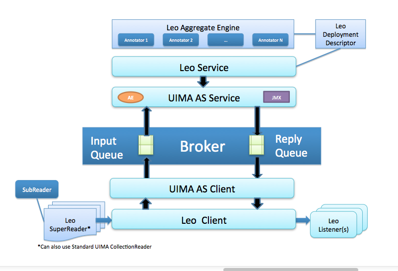
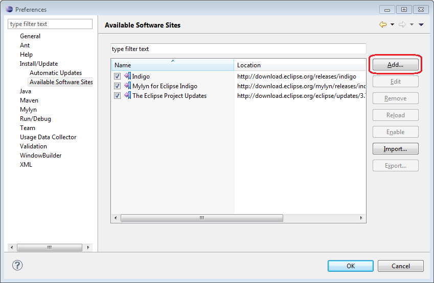
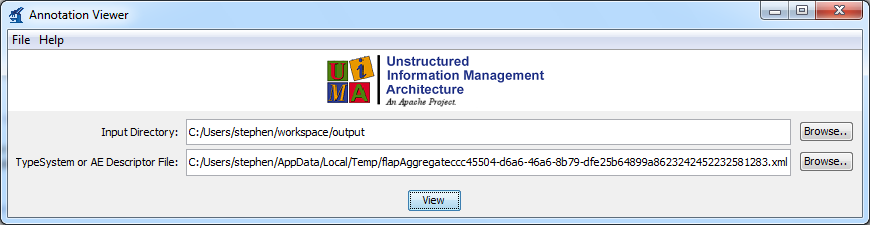

1. Leo Overview
The VINCI-developed Natural Language Processing(NLP) infrastructure, is a set of services and libraries that facilitate the rapid creation and deployment of Apache UIMA-AS annotators focused on NLP. Leo is separated into three main components; Leo-client, Leo-core, and Leo-service.
leo-client contains the components that send requests to the services. Setting up a client is as simple as picking the collection reader and listener required.
leo-core contains the core tools that have been developed in conjunction with Leo to facilitate various NLP and annotation needs.
leo-service contains the core server functionality for launching UIMA_AS services. All three packages can be found together in leo-base.
Leo also contains a collection of packages that provide additional functionalities for creating custom pipelines for distributed NLP systems. The Basic architecture of Leo is shown in the following image with the flow beginning at the reader.

Documentation Overview
The documentation is separated into two main sections; in the first sections of this guide you’ll find a description of Leo as well as associated terminology and concepts. The next section goes into detail about setting up your computer, installing and configuring everything needed in order to run a sample Leo Project. Once the Leo project is up and running, you will find a description of the steps needed in order to adapt Leo to your specific project needs. For specific questions about the use of various classes and methods within Leo see the Javadoc page.
If you’re already familiar with UIMA and Maven, you can go to the Download page here for the POM dependencies required. A list of relevant tools and packages used by Leo can be found in the Components and Tools page.
1.1 Leo-Client
The client is used to define the readers and listeners needed to execute a pipeline via the client API for UIMA_AS. In Leo-client will initialize and execute a pipeline via the client API for UIMA AS which has been created via the Service object. Setting up a client is as simple as picking the collection reader and listener required; plugging in the input directory you’re using, and specifying the output listener that you’d like to use. An example of the code requiring your input can be found in the “Understanding and Adapting the Leo-Example Project” section of the User-guide.
CollectionReaders: Fountains of knowledge
UIMA-AS services analyze and tag data stored in CAS (Common Analysis Structure) objects. CAS objects are sent from the client to the service after the client has populated the CAS with document text. CollectionReaders populate the document text in each CAS object. The source of the document text varies between readers. Some common sources include text files and relational database tables.
Leo Readers
Leo provides complete CollectionReaders for the some of the most common data sources. The readers that are included in the core leo packages are the BatchDatabaseCollectionReader, DatabaseCollectionReader, SQLServerPagedDatabaseCollectionReader, FileCollectionReader, and XmiFileCollectionReader. There are also other readers not included in the core leo packages for some common specific formats such as Knowtator or Siman pre-annotated document information.
Complete Leo Readers
The DatabaseCollectionReader pulls in one record per row of query results. The standard java database connection information must be provided such as the jdbc driver, url, username, password, and the query to execute. The ID and Note column names are also required so that the reader knows from which fields in the query to pull the record ID and document text. See the javadocs for more information on expected parameters.
DatabaseCollectionReader reader = new DatabaseCollectionReader("com.mysql.jdbc.Driver", "jdbc:mysql://localhost/test",
"testuser", "password", "select id, document from example_document", "id", "document");
The BatchDatabaseCollectionReader extends the DatabaseCollectionReader. It allows the user to pull the data in batches based on some sequential identifier, such as a row number field in the table. This is handy for large tables as well as environments with less reliable database connections. The information required to initialize the BatchDatabaseCollectionReader is the same as for the DatabaseCollectionReader with the addition of the minimum and maximum identifier fields and a batch size field. The query can optionally include a {min} and {max} tag set which will be replaced by the minimum and maximum record identifiers of each batch as in the following code:
BatchDatabaseCollectionReader reader = new BatchDatabaseCollectionReader("com.mysql.jdbc.Driver", "jdbc:mysql://localhost/test",
"testuser", "password",
"select id, document from example_document where rowno >= {min} and rowno < {max}",
"id", "document", 0, 100, 10);
The SQLServerPagedDatabaseCollectionReader extends the DatabaseCollectionReader. It allows the user to pull table data in batches from a MS SQL Server table. Parameters include a first row offset for processing and the number of records to pull in each batch or page size as in the following code:
SQLServerPagedDatabaseCollectionReader reader = new SQLServerPagedDatabaseCollectionReader("com.microsoft.sqlserver.jdbc.SQLServerDriver",
"jdbc:mysql://localhost/test",
"testuser", "password",
"select id, document from example_document order by id",
"id", "document", 50000, 0);
The FileCollectionReader reads a collection of files from an input directory. The reader can be flagged to recurse into sub-directories. By default the reader will only process files with a .txt extension however a custom file extension filter can also be specified. See the javadocs for more information.
FileCollectionReader reader = new FileCollectionReader(new File("data/input"), false);
The XmiFileCollectionReader is a special case of a FileCollectionReader which reads in the IBM xmi output format for CAS serialization. The XmiFileCollectionReader does not allow the user to specify a custom extension, just the input directory and recurse flag.
XmiFileCollectionReader reader = new XmiFileCollectionReader(new File("data/xmi-input"), false);
Base Leo Readers
Leo also provides Base versions of common types of CollectionReaders so that custom implementations are easier to create. The base readers are the BaseDatabaseCollectionReader and BaseFileCollectionReader. Each of these readers extend the BaseLeoCollectionReader as well as providing most of the functionality required to implement a reader of that type. In each case the only required abstract method is the getNext(CAS aCas) method for supplying the actual document text. For more information see the Javadocs of the base reader implementations.
BaseLeoCollectionReader
Leo provides an abstract base object that implements the most common aspects of the UIMA CollectionReader API called the BaseLeoCollectionReader. There are some methods however that are required by the API for the purpose of communicating the progress through a collection of data as well as the action of retrieving the data. These methods must be implemented by extending classes.
hasNext() returns a boolean which when true indicates that there is more data for processing in the collection.
@Override
public boolean hasNext() throws IOException, CollectionException {
return currentString < numberOfStrings;
}
getNext(CAS aCAS) populates the document text in the CAS object provided.
@Override
public void getNext(CAS aCAS) throws CollectionException, IOException {
int length = random.nextInt(MAX_STRING_LENGTH);
aCAS.setDocumentText(RandomStringUtils.randomAlphanumeric(length));
currentString++;
}
Progress[] getProgress() returns an array of UIMA Progress objects, typically with only one element, which record the current record index relative to the size of the data collection.
@Override
public Progress[] getProgress() {
return new Progress[]{ new ProgressImpl(currentString, numberOfStrings, Progress.ENTITIES) };
}
CollectionReader produceCollectionReader() creates a new CollectionReaderDescription by creating parameters from class variables marked with the @LeoConfigurationParameter annotation. Values from those variables are propagated into the descriptor and then a new CollectionReader instance is produced from the descriptor that is created.
Here is the code for a complete CollectionReader implementation that extends the BaseLeoCollectionReader.
/**
* This reader populates a specified number of CAS objects with random strings. Useful primarily as an example of the
* implementation of the BaseLeoCollectionReader API.
*
* User: Thomas Ginter
* Date: 10/27/14
* Time: 09:15
*/
public class RandomStringCollectionReader extends BaseLeoCollectionReader {
/**
* Number of strings produced so far.
*/
protected int currentString = 0;
/**
* Number of strings that the reader will create.
*/
@LeoConfigurationParameter(mandatory = true)
protected int numberOfStrings = 0;
/**
* Generates a random length for each string.
*/
protected Random random = new Random(System.currentTimeMillis());
/**
* Maximum length of the generated string.
*/
protected static final int MAX_STRING_LENGTH = 1024;
public RandomStringCollectionReader(int numberOfStrings) {
this.numberOfStrings = numberOfStrings;
}
/**
* @param aCAS the CAS to populate with the next document;
* @throws org.apache.uima.collection.CollectionException if there is a problem getting the next and populating the CAS.
* @see LeoCollectionReaderInterface#getNext(org.apache.uima.cas.CAS)
*/
@Override
public void getNext(CAS aCAS) throws CollectionException, IOException {
int length = random.nextInt(MAX_STRING_LENGTH);
aCAS.setDocumentText(RandomStringUtils.randomAlphanumeric(length));
currentString++;
}
/**
* @return true if and only if there are more elements available from this CollectionReader.
* @throws java.io.IOException
* @throws org.apache.uima.collection.CollectionException
* @see LeoCollectionReaderInterface#hasNext()
*/
@Override
public boolean hasNext() throws IOException, CollectionException {
return currentString < numberOfStrings;
}
/**
* Gets information about the number of entities and/or amount of data that has been read from
* this <code>CollectionReader</code>, and the total amount that remains (if that information
* is available).
* <p/>
* This method returns an array of <code>Progress</code> objects so that results can be reported
* using different units. For example, the CollectionReader could report progress in terms of the
* number of documents that have been read and also in terms of the number of bytes that have been
* read. In many cases, it will be sufficient to return just one <code>Progress</code> object.
*
* @return an array of <code>Progress</code> objects. Each object may have different units (for
* example number of entities or bytes).
*/
@Override
public Progress[] getProgress() {
return new Progress[]{ new ProgressImpl(currentString, numberOfStrings, Progress.ENTITIES) };
}
}
Third Party Readers
Third party CollectionReaders can be used as easily as LeoCollectionReaders using the ExternalCollectionReader object. The ExternalCollectionReader can be initialized using either an object that extends the CollectionReader_ImplBase or a File object that references the CollectionReader descriptor as in the following examples:
//From reader object
CollectionReader myReader = new MyReader(param1, param2);
ExternalCollectionReader myExternalReader = new ExternalCollectionReader(myReader);
//From descriptor file
ExternalCollectionReader externalReader = new ExternalCollectionReader(new File("path/to/readerDescriptor.xml"));
Listeners: What was that?
UIMA Listeners
UIMA-AS clients send data to services populated in CAS (Common Analysis Structure) objects by CollectionReaders. After the services have finished processing the text in the CAS it is sent back to the client. The client then passes the CAS to one or more registered listener objects. Listeners receive several different events from the client framework during the course of sending and receiving CAS objects to/from the services. The event that receives the completed CAS object back from the service is called the entityProcessComplete event. In this event we receive a reference handle to the CAS as well as a status message. From this event listeners can iterate through the CAS processing results for storage or further processing. In this way CollectionReaders are the source of data input and Listeners are the mechanism for output. For more information on UIMA listeners check out the documentation found on the UIMA Site
Leo Listeners
Leo provides two completed listeners and three base listeners for users to extend to create their own listener. The complete listeners are basic examples of listener implementations called the SimpleCsvListener and SimpleXmiListener.
The SimpleXmiListener extends the BaseListener class to dump CAS objects to UIMA’s XMI format. XMI is essentially an XML representation of the CAS that can be stored and then loaded later for additional processing. CAS output can be filtered by setting the type names in the annotationTypeFilter. When types have been added to the filter array then only CAS objects containing one or more of the filter types will be written to the output directory.
The SimpleCsvListener writes the annotations found in each CAS to an output CSV file. The user can choose whether or not to include features in the output though by default they are excluded.
Base Leo Listeners
There are three base listeners in the Leo client module. They are the BaseListener, BaseCsvListener, and BaseDatabaseListener. The BaseListener provides the core listener functionality and will be discussed in the section titled “Create a Custom Listener”. The BaseCsvListener and BaseDatabaseListener extend the BaseListener to add specialized functions.
The BaseCsvListener provides the capability to write out CSV output with custom separators. Extending classes can set the header data by overriding the String[] getHeaders() method to provide the custom header list. The writeHeaders() method can then be called by either the client or as part of an initialization event in the extending listener. This method should only be called once as it is used to write the header row to the output CSV file. Extending classes must also implement the List<String[]> getRows(CAS cas) method. Each String[] in the list that is returned represents a row of data that will be written to the output CSV file.
The BaseDatabaseListener provides the ability to write rows to an output database table. The output table can be created by calling one of the public createTable methods provided by the base listener. Extending classes must override the List<Object[]> getRows(CAS aCas) method. Each Object[] represents a row of data to be added to the table. Rows are added as a batch whose size is configurable. The appropriate batch size will vary depending on the database environment being used. If inserts are taking an inordinate amount of time then the batch size may be too large, however if your program execution is delayed because there are too many batches being created then the batch size should be increased.
Create a Custom Listener
Creating a custom listener other than the ones already listed the user can extend the BaseListener class. Extending classes should call super.entityProcessComplete(aCas, aStatus) in the overriding void entityProcessComplete(CAS aCas, EntityProcessStatus aStatus) method. Doing so allows the BaseListener to screen the status object for errors and keep track of the counts of CAS objects sent and received to/from the services. The annotationTypeFilter can also be accessed from the BaseListener class for basic output filtering. A good example of an extending class to the BaseListener can be found in the SimpleXmiListener.java source code.
Third Party Listeners
The Leo Client class will register any listener object that extends the UIMA UimaAsBaseCallbackListenerobject. This allows the Leo Client to use any third party listener in addition to listeners that extend the BaseListener.
1.2 Leo-Service
The Leo Service class can be used to define type system and annotators for the pipeline programmatically. The Service class deploys the UIMA AS service from the list of primitive descriptor files or Annotator objects provided by the caller. Any modules that will be executed must be in the class path of the Server process, remote modules being the exception once those are implemented. Setting up the Service, like most aspects of Leo, is as simple as editing a few directories to your specific files.
Analysis Engines
** LeoBaseAnnotator: **
This is a base annotator class for holding functions that all annotators might take advantage of, such as loading resources files, initializing parameters etc…
** LeoCachingAnnotator: **
A base annotator with methods that implement caching via EHCache.
Creating an annotator
Leo is geared towards processing machine-readable text. A base annotator class gov.va.vinci.leo.ae.LeoBaseAnnotator (which extends org.apache.uima.analysis_component.JCasAnnotator_ImplBase ) is provided to simplify and speed up development of an Analysis Engine for text processing.
In order to develop an annotator, write a new class that extends gov.va.vinci.leo.ae.LeoBaseAnnotator. Each AE has to have two main steps – initializing the AE parameters, and processing each document. When a service is deployed (see Service deployment methods section), for each annotator and AE object is created and initialized. When a document reaches the specific annotator in the pipeline, the document JCas is passed to the annotate method.
import gov.va.vinci.leo.ae.LeoBaseAnnotator;
import gov.va.vinci.leo.descriptors.LeoTypeSystemDescription;
import org.apache.uima.analysis_engine.AnalysisEngineProcessException;
import org.apache.uima.jcas.JCas;
public class myAnnotator extends LeoBaseAnnotator {
@LeoConfigurationParameter
protected String myStringParam = null;
@Override
public void initialize(UimaContext aContext) throws ResourceInitializationException {
super.initialize(aContext);
< additional initialization code >
}
@Override
public void annotate(JCas aJCas) throws AnalysisEngineProcessException {
< additional processing code >
}
}
Annotator parameters are identified with the @LeoConfigurationParameter annotation. The LeoBaseAnnotator will extract parameter values set in an annotator object and propagate them to the descriptor. In addition values set in the descriptor will be initialized in the annotator when the pipeline is initialized. You should write setter and getter methods for each of the annotator parameters that you wish to set in creating Leo pipelines.
Depending on the needs of your annotator, you may use the default initialize method to validate values or perform additional initialization:
initialize(org.apache.uima.UimaContext aContext);
When overriding the initialize(UimaContext aContext) method super.initialize(aContext) must be called in order for the base annotator values extraction to function properly.
When extending the base annotator, the only method required to overwrite is annotate(org.apache.uima.jcas.JCas aJCas) The CAS object that is passed by the system contains getDocumentText() method that gives access to the actual text of the document.
—
1.4 Leo-Core
The Leo-Core package contains the tools, descriptors, types, and extra functionalities of Leo that are helpful for individualized tasks.
Descriptors
Descriptors are used to define the annotators that make up a service as well as the type system that those annotators will use. The Leo-core package comes with several commonly used descriptors such as an aggregate engine factory, and type system descriptors.
LeoAEDescriptor
This is one of the handiest classes in Leo. It allows the user to easily create and modify an AnalysisEngineDescriptor object without needing to directly access the UIMA API. The class extends gov.va.vinci.leo.descriptors.LeoDelegate, which also is implemented by LeoRemoteAEDescriptor.
For a complete list of the descriptors available see the descriptors section of the Javadocs.
Tools
Here you’ll find useful tools like an ascii filter, text filters and xml filters. See the Javadocs for complete code and descriptions of each tool.
2. Installation and Configuration of Leo-Example
Installation and Configuration
The guide below will walk you through the steps needed to configure your computer, set up Leo, and start running a simple Leo pipeline. It is exhaustive; if you’re already familiar with UIMA and Maven, you can go to the Download page here for the POM’s required.
2.1 Install the UIMA Framework
2.1.1 Downloading and Extracting UIMA
- Visit the Apache UIMA - Downloads Official Releases webpage.
- Skip to Section v2.6.0, download the binary version of the UIMA-AS Asynchronous Scale-out.
- Extract the contents of the file you just downloaded to any permanent location you choose on your computer. Just don’t forget what folder you choose because you will need it later. A reasonable location on a Windows computer would be the root of the C: drive. For Linux or Mac users, you might choose /usr/local/ or /usr/share/.
2.1.2 Setting the UIMA Environment Variable
You will need to set an environment variable called UIMA_HOME, the value of which should be the directory into which you just extracted the UIMA files. For example, on Windows, this might be C:\apache-uima-as-2.6.0
- For help setting a Windows environment variable, click here. These instructions are specifically for Windows 7, but the process is virtually identical on all versions of Windows.
- To set the environment variable in Mac OSX, add the following to /etc/launchd.conf (create the file, if necessary): setenv UIMA_HOME {your_uima_path} (i.e. /Applications/apache-uima-as-2.6.0)
- To set the environment variable in Linux, add the following line(or some variant thereof) to the .profile file in your home directory:
export UIMA_HOME=/usr/local/apache-uima-as-2.6.0
2.2 Install Java Development Kit
You will need a copy of the JDK on your system.
-
If you need to install the JDK for a windows machine, click here and click on the button labeled Java Platform(JDK). Next Accept the license agreement and click the link appropriate for your platform (32-bit vs 64-bit).
-
If you need to install the JDK for a linux machine, use your system’s package manager. Example: sudo aptitude install default-jdk
-
The oracle JDK for Mac can be downloaded at this site.
2.3 Install Eclipse or Intellij
Windows and Mac OS X
- This example will continue using Eclipse; however, Intellij works excellently and is preferred by some.
- You can find the Intellij download needed here. The free community edition has all of the functionality required for Leo.
- When you visit the Eclipse download page, you are presented with several varieties of Eclipse. The processes described in this document have only been tested with the version called “Eclipse IDE for Java Developers”. Download Eclipse and extract it to some location on your hard drive.
2.4 Install Eclipse Plugins
After launching Eclipse, in the Preferences window, select “Install/update” -> “Available Software Sites” in the tree on the left. On the far right, there should be an “Add” button as depicted in this image:

Using the “Add” button, ensure that the following sites are in your list and are enabled. If Eclipse warns you that any of these already exist, that’s fine; you can skip those.
| Recommended Name | Location |
|---|---|
| Eclipse Project Updates | http://download.eclipse.org/eclipse/updates/3.7 |
| Mylyn for Eclipse Indigo | http://download.eclipse.org/mylyn/releases/indigo |
| Maven | http://download.eclipse.org/technology/m2e/releases |
| Luna | http://download.eclipse.org/releases/Mars |
*As a side note, Mars is the name of the current version of Eclipse, the link name may change with newer versions.
Once you have added all of these sites, click OK on the Preferences dialog. Now we can proceed to actually install the plugins. To do this, click “Install New Software…” in the “Help” Menu. In the “Install” dialog that pops up, there is a drop-down menu where you can select a site to work with.
When prompted to restart Eclipse, click “Not Now” until you have installed all of the plugins. You will need to restart Eclipse after the last plugin has been installed.
2.4.1 Basics of Maven
Leo uses Maven dependencies and as such, there needs to be a maven environment configured on your computer. Maven is a dependency and build system. The core of maven is found in the pom.xml that will reside at the top level of every project. The pom.xml describes the dependencies, as well as build, deployment and reporting aspects of the project. With Leo you typically use maven at the very beginning of your project in order to setup dependencies and builds; eclipse is generally used throughout the rest of the project.
In order to use our maven repository, you need to update your settings.xml file. This file is found in (~/.m2/). If there is no settings.xml file create a blank text file with that name and populate it with this code.
<project ...>
<repositories>
<repository>
<id>decipher</id>
<url>http://decipher.chpc.utah.edu/nexus/content/groups/public</url>
</repository>
</repositories>
...
</project>
Additionally in the menu bar you can go to Window > Preferences. Select Java > Build Path > Classpath Variables, click on the new button > MR_REPO variable and point it to your Maven repository.
2.5. Add Libraries
Enter the Eclipse Preferences window once again and select Java -> Installed JREs. If you have more than one JRE listed, you may want to do this for each one just to be sure.
Select your JRE and click the “Edit” Button on the right. In the window that pops up, click on the “Add External JARs…” button. Browse to the location where your JDK is installed, looking either for tools.jar or classes.jar (depending on your platform):
- In Windows, look for C:\Program Files\Java\jdk1.7.0_02\lib\tools.jar (the folder version number may vary).
- In Ubuntu Linux, this will likely be something like /usr/lib/jvm/java-6-openjdk/lib/tools.jar
- In Mac OS, look in /System/Library/Frameworks/JavaVM.framework/Classes
Verify that the JAR you just selected (either tools.jar or classes.jar) was added to the list in the “Edit JRE” window and click Finish.
Before closing the Preferences window, select Java -> Build Path -> User Libraries. Click the “New” button, name the library “UIMA-AS-2.6.0”, and click OK. You should now see UIMA-AS-2.6.0 in your list of User Libraries. Select UIMA-AS-2.6.0 and click on the “Add JARs…” button. Now browse to the location where you saved the UIMA library way back at the beginning of this document. Within the UIMA directory, browse into the lib directory and select all of the JARs. After you click OK, you should see many entries under UIMA-AS-2.6.0 in the User Libraries dialog. We still need to add more JARs to it, so select UIMA-AS-2.6.0 again and click the “Add JARs…” button. Under the main UIMA directory, look for a directory called apache-activemq-5.4.1. Browse into it, then browse into its lib directory, and select all of the JARs you find. Now click OK on the User Libraries dialog.
2.6. Install Git
While it is true that you already installed the Git plugin, the command line tools are still necessary as the plugin simply doesn’t give us everything we need.
2.6.1 Windows
Git was not designed to run in Windows. Fortunately, some folks created a windows port called msysgit. In order to find the most recent version click here. Git is also available through Cygwin, though untested with respect to this document.
2.6.2 Linux
Check your package manager. Example:
sudo aptitude install git
2.6.3 Mac OS X
Macs are great; it’s likely that you already have Git installed. You can check by using git --version in terminal. If for some reason you don’t, click here.
2.7. Clone the Leo Example
Now that Git is installed, we can grab the latest version of Leo. Open up the terminal(or Git Bash on Windows) and cd to your workspace directory. For an easy example pipeline, enter this command:
git clone http://decipher.chpc.utah.edu/gitblit/git/examples/leo-example.git
Git has now created an example pipeline that uses Leo, and has the ability to process text, annotate the text through various java classes, and output the data in xmi format. However, the project is not quite ready to be run; at this point you will need to import the project into Eclipse.
2.8. Import Leo into Eclipse Workspace
In the step above, we downloaded Leo into a directory contained in our workspace directory. However, Eclipse doesn’t know that yet. You can add the project into eclipse by either using maven, or the Eclipse menus.
2.8.1 Create eclipse Project Using Maven
This step is the quickest and easiest, but for the sake of completeness, the option to create the project through Eclipse can be found in the next step. While in the terminal or command line, make sure that you are currently in the directory for the project (i.e. User/Workspace/leo-example). While in the directory run:
mvn eclipse:eclipse
The eclipse project has now been created.
2.8.2 Import project through Eclipse
In the Eclipse File menu, select “Import…”. A prompt will now show up, expand the “Git” folder folder and select “Projects from Git”, then go to “Existing projects from Git”. When you are prompted to select a Git repository, click the “add” button on the right. Then browse to the Leo directory that you just cloned. Make sure the checkbox is checked next to the Leo directory and click OK. Click “Next”. Now you will be prompted to select a wizard for importing the project, select the second option, which is labeled “Use the New Projects wizard” and click “Finish”.
A new dialog window will appear prompting you to select a wizard. Expand the Java folder and pick “Java Project”. Click “Next and name the project ”leo“ or ”leo_example" depending on which option you cloned.
2.9 Running the Sample Project
In the Previous section we set up a Leo environment using a Leo-Sample project. The steps to run a project described in this section are the same whether you are using the sample project, or your own project build.
If you’re running the sample project make sure that there is an input and output directory in the “Data” folder on the left side of the eclipse project. If the output folder is not there, create one.
If you’re running your own pipeline using Leo components, be sure to stop here and make sure that your Service and Client are configured.
Now you’re ready to run the example pipeline, or Leo as a whole pipeline with your own or other annotators.
Start Broker
Open terminal/command line, and find your way to the UIMA home directory, then CD to the bin sub-directory. Now run the startBroker script(startBroker.bat on Windows, ./startBroker.sh otherwise). At this point there will be some text scrolling by, just leave this running and switch back to Eclipse.
Run the Service
Run the service program by opening its source file (i.e src/main/java/ExampleService.java) and clicking the green Run button at the top of Eclipse.
Run the Client
Now that the Service is running, it’s time to open the client program and click the Run button again. You will now need to open a new terminal window, cd to your UIMA_HOME/bin directory again and run the “annotationViewer” script(./annotationViewer.sh). This dialog will now appear:

Change the first text field “input directory” to the output directory that you created.
The second one is a little trickier. Scroll back through the SampleService output looking for a line that looks something like this:
Aggregate: /var/folders/x9/r87vxc1s1fb6gl80r306hf7h0000gn/T/leoAggregate7687725334298388844.xml
Copy the path to the aggregate descriptor into the second text field of the Annotation Viewer window.
Once both fields are filled in, click the “View” button. A new window with the analyzed documents will pop up. It will contain a list of xmi files, each one corresponding to one of the files in your input directory. To see results of the simple service, double click on any of the xmi files. If an “Annotation Results…” window appears with colorful text, you’re all done! The pipeline has processed the text according to the annotators provided in the client.java program, and given you the xmi files needed for your research!
3. Understanding and Adapting the Leo-Example Project
In the previous section we downloaded the Leo-Example and configured your computer for Leo, UIMA, and Maven. We also ran the sample project as is. The example pipeline and input/output files are a simple demonstration used in order to ensure that everything you would need for a Leo Pipeline is ready to go. This section will detail each of the packages and how you can configure Leo for your own projects.
Adapting the Client
The Example comes with two possible Clients to use; the first is “CommandLineClient.java” which allows the user to give command line Arguments for configuration if that’s the route they prefer. This guide is going to begin with the other Client “ExampleClient.java”. The Example Client is where you will specify which Collection Reader and Listener your pipeline will use. This Leo-Example project only contains two possible Listeners(CSV Listener, XMIListener) and four Readers(BatchDatabase, DatabaseCollection, FileCollection and XmiFileCollection). For more information about other Readers and Listeners as well as learning how to build and adapt your own, see the Listener and Reader Section of the User-guide under “Leo Client”.
In the code below, you only need to change which Reader and Listener you plan to use.
new CommandLineClient( new File("config/ClientConfig.groovy"),
new File("config/readers/FileCollectionReaderExample.groovy"),
new File[]{new File("config/listeners/SimpleXmiListenerExample.groovy")}
).runClient();
This is all that you need to change in the Client file. Now you can go to the respective configuration file for the Reader and Listener you’re using in order to specify the paths used in your project. In the “config” folder you will find the configuration files for each Listener and Reader, as well as any resource files required by an annotator. All that is required in the config files is to specify your project specific paths.
Specify the Input files in the Reader(FileCollectionReaderExample.groovy):
reader = new FileCollectionReader(new File("data/input"), false);
Specify the Output files in the Listener(SimpleXmiListernExample.groovy):
listener = new SimpleXmiListener(new File("data/output"))
The ClientConfig.groovy file requires the user to specify a brokerUrl where the ActiveMQ Broker is running, a CAS pool size to determine how big the input and output queue is, as well as the “endpoint” or project name. The “jam” options are used when you want to actively monitor performance using the JAM app described in “Components and Tools”.
brokerUrl = "tcp://localhost:61616" endpoint = "leoExample" casPoolSize = 4 CCTimeout = 1000 jamQueryIntervalInSeconds = 60 jamResetStatisticsAfterQuery = true jamServerBaseUrl = "http://localhost:8080/jam"
The client has now been configured for your specific project.
Adapting the Service
Creating a service requires an input queue name that is unique to this service as well as the broker url used by the ActiveMQ broker. For scalability, multiple instances of a service may be started in their own JVM instances. All services should have the same broker url and service names. In that scenario, the client requests are routed to whichever instance is currently idle. In gov.va.vinci.leo.examples/ExampleService.java you will find the code required to change the broker url and name of the input queue.
server.setBrokerURL("tcp://localhost:61616"); /* Step 1 - set the ActiveMQ broker URL */
server.setEndpoint("leoExample"); /* Step 2 - name of the input queue for ActiveMQ */
In addition, a service requires a type description and aggregate to actually do work.
LeoAEDescriptor aggregate = new ExamplePipeline().getPipeline();
aggregate.setIsAsync(true);
aggregate.setNumberOfInstances(1);
Adapting the Pipeline and Selecting Annotators
At this point, the only thing you need to do in order to further adapt your pipeline is to choose which annotators you will be using in gov.va.vinci.leo.examples.pipeline. We will be looking into ExamplePipeline.java. ExampleScalablePipeline provides the structure required if the pipeline you are implementing requires further scalability. PipelineInterface.java is a helper class that allows for interchangeability of multiple pipelines so that the user can easily switch between pipelines if needed. You only need to extend it in order to use the same names from one pipeline to another.
ExamplePipeline.java has the code required to use the regex and Window Annotators. For information on how to use other annotators, go to the “Additional Annotators” section of this User-guide.
public class ExamplePipeline implements PipelineInterface{
LeoAEDescriptor pipeline = null;
/**
* Constructor
* @throws Exception
*/
public ExamplePipeline() {
}
@Override
public LeoAEDescriptor getPipeline() throws Exception {
if(pipeline == null) {
pipeline = new LeoAEDescriptor();
/** Add the regex annotator first **/
pipeline.addDelegate(
new RegexAnnotator()
.setGroovyConfigFile("config/resources/example-regex.groovy")
.setLeoTypeSystemDescription(getLeoTypeSystemDescription())
.getLeoAEDescriptor()
);
/**
* Second, add windows around the regexes. The window annotation will extend 1 word (defined as separated by a whitespace
* character before and after each character string.
*/
pipeline.addDelegate(
new WindowAnnotator(Window.class.getCanonicalName(), RegularExpressionType.class.getCanonicalName())
.setWindowSize(1)
.setAnchorFeature("Anchor")
.setLeoTypeSystemDescription(getLeoTypeSystemDescription())
.getLeoAEDescriptor()
);
}
return pipeline;
}
@Override
public LeoTypeSystemDescription getLeoTypeSystemDescription() {
LeoTypeSystemDescription description = new WindowAnnotator().getLeoTypeSystemDescription();
description.addTypeSystemDescription(new RegexAnnotator().getLeoTypeSystemDescription());
return description;
}
}
In order to create your own annotator. the annotate method has to be developed.
This line of code already assumes that JcasGen has been called.
@Override
public LeoTypeSystemDescription getLeoTypeSystemDescription() {
LeoTypeSystemDescription description = new WindowAnnotator().getLeoTypeSystemDescription();
description.addTypeSystemDescription(new RegexAnnotator().getLeoTypeSystemDescription());
return description;
}
In other projects you will need to call JcasGen in order to generate your java and class files.
if (generateTypes)
{
types.jCasGen("src/main/java", "target/classes");
}
Running your Project
The process used to finally run a project is the same as described at the end of the previous section. 1. Start the Broker 2. Run the Service 3. Run the Client From here, you can view the annotations created in your pipeline using the default UIMA annotation viewer, or some of the other tools described in the Components and Tools page.
4. Additional Annotators
Several specialized annotators have been developed and optimized for general NLP tasks.
Annotation Librarian
Building on Annotation Librarian ideas, the AnnotationPatternAnnotator mirrors regular expression functionality to manipulate annotations. It uses a resource file that contains regular expressions that include tagged annotation types combined with standard regular expressions syntax. Additionally, part of the pattern can be separated as an Anchor feature, where a new annotation is created for the tagged snippet.
Annotation Pattern Annotator(APA)
The behavior of Annotation Pattern is very similar to the Java Regex Package’s Pattern and Matcher classes. The AnnotationPattern Object is created using the simple syntax : AnnotationPattern patternName = AnnotationPattern.compile(regex); where - compile() - is a private static method which takes the annotationPattern to return an AnnotationPattern Object. - regex - is a String that will mention the Annotation annotationPattern which the user is expecting. Below are various examples to show different combination of patterns.
ConceptLink Annotator
Creates output annotations covering related concepts. Includes a MatchMaker annotator for concept value pair annotations.
CONTEXT
This project contains a Leo wrapper for ConText application found at http://orbit.nlm.nih.gov/resource/context.
ConText is based on a negation algorithm called NegEx. ConText’s input is a sentence with indexed clinical conditions; ConText’s output for each indexed condition is the value for contextual features or modifiers. The initial versions of ConText determines values for three modifiers:
Negation - affirmed or negated. Temporality - recent, historical, or hypothetical. Experiencer - patient or other. The current version of ContextAnnotator has additional output features.
ContextAnnotator outputs an annotation of the outputType type. The outputType also has an additional feature – Window – which contains the annotation of the window in which the concept is found. The ContextAnnotation will span only the concept itself and not the window. So this feature is a hook to the input type in the output type.
We adopted it as a UIMA annotator, and made several changes to the algorithm. Such as a new rule category “adjacent”, which specifies rules for words that are immediately before or immediately after the anchor word; as well as several new rules to the resource file.
Merge Annotator
The Merge Annotator allows the user to easily merge overlapping or proximal annotations of the same type.
REGEX Annotator
The Regular Expression Annotator provides a UIMA based annotator for searching a corpus using regular Expressions. The Regular Expression Annotator can be configured via a simple configuration file, for processing a single group of patterns with the same configuration for each pattern, or via a more flexible Groovy configuration file that allows for multiple groups of patterns configured with different parameters per group of patterns. For a more detailed synopsis and download instructions, you can go the the Regular Expression site here.
Sentence Annotator
Annotates sentences found in a covering annotation or on the document as a whole.
Sherlock
The Sherlock framework provides the base objects for implementing machine learning (ML) algorithms in a UIMA environment. It does not attempt to provide a specific ML implementation but rather the means to accessing existing implementations within a framework of objects that provide a common interface. This is accomplished by recognizing two primary workflows for learning tasks:
(Training) INPUT -> Compute Feature Vector -> Create Vector Classification -> Aggregate Vectors and Classifications -> Train a Learning Model (Prediction) INPUT -> Compute Feature Vector -> Predict from Trained Model Sherlock was created from the need to be able to perform the above outlines processes within UIMA utilizing previously created annotations as well as the source text as the INPUT for feature vector creation.
White Space Annotator
Create a series of tokens that ignore whitespace and identify the basic building blocks of words, newline, number, and punctuation identifiers. This can be done either character by character using the WhitespaceTokenizer, or regular expressions using RegexWhitespaceTokenizer.
Window Annotator
The Window annotator takes an anchor annotation and builds a new annotation that is larger that the anchor annotation based on specified number of tokens to the left and to the right of the anchor annotation. If only a single window number is specified, the left and write window will be at the equal distance from the anchor annotation. A link to the anchor annotation gets stored in an output annotation as a feature.
—
5. Terminology
Aggregate Analysis Engine An Analysis Engine that is implemented by configuring a collection of component analysis Engines.
Analysis Engine(AE) - A program that analyzes artifacts (e.g. documents) and infers information about them, and which implements the UIMA Analysis Engine interface Specification. It does not matter how the program is built, with what framework or whether or not it contains component (“sub”) Analysis Engines.
Annotator - Not to be confused with manual annotators(people), this is a software component that is used to write relevant metadata over the text being processed.
CAS - The UIMA Common Analysis Structure is the primary data structure which UIMA analysis components use to represent and share analysis results. It contains:
- The artifact - This is the object being analyzed such as a text document or audio or video stream. The CAS projects one or more views of the artifact. Each view is referred to as a Subject of Analysis.
- A type system description indicating the types, subtypes, and their features.
- Analysis metadata “standoff” annotations describing the artifact or a region of the artifact
- An index repository to support efficient access to and iteration over the results of analysis.
- UIMA’s primary interface to this structure is provided by a class called the Common Analysis System. We use “CAS” to refer to both the structure and system. Where the common analysis structure is used through a different interface, the particular implementation of the structure is indicated, For example, the JCas is a native Java object representation of the contents of the common analysis structure.
Client - A component that sends requests to the services.
Collection Reader - A component that reads documents from some source, for example a file system or database. Each document is returned as a CAS that may then be processed by Analysis Engines. If the task of populating a CAS from the document is complex, a Collection Reader may choose to use a CAS Initializer for this purpose.
Descriptor A descriptor defines the annotators that make up a service, as well as the type system(s) those annotator(s) use.
Listener A Listener is a package that listens to the output provided by the pipeline, and outputs it in the different formats needed per project.(csv, xmi)
UIMA-AS - UIMA-AS is substantially different from UIMA and provides a range of additional functionality enabling scalable processing. While UIMA components can be run within UIMA AS with no descriptor changes, additional descriptor files are required to deploy systems based on UIMA AS.
Service - The Leo service provides the Core Server functionality for launching UIMA-AS services.
XMI - XML Metadata Interchange
XML - Extensible Markup Language